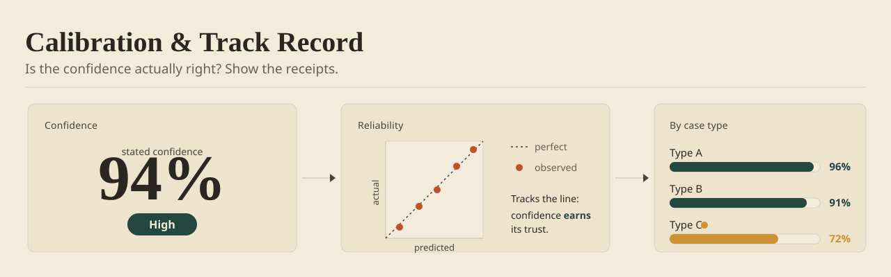

A confidence number is a claim; its track record is the evidence. Calibration shows whether "80% sure" has actually been right about 80% of the time — so a person can learn exactly how hard to lean on the model, and watch that judgment improve as the history grows.

Show the hit rate beside the number
A confidence score with no history is a stranger's opinion. The same number gets believable the moment it sits next to its own record: "high confidence — right on 94% of the last 200 calls like this." Now the person isn't trusting the model's self-assessment; they're trusting its receipts.
This is the single cheapest trust-builder in AI UX and the most often skipped. Teams ship the confidence number and never ship the thing that makes it mean something — the evidence that the confidence has been honest before.
Try it — the pattern, live
The same live demo that runs in the book edition's field guide. Synthetic data; nothing leaves the page.
Break it down by the kind of case
A single global accuracy figure hides the cases that matter. A model can be 90% accurate overall and reliably wrong on a specific, important slice. Calibration that's worth anything is segmented: accuracy by case type, by confidence band, by the conditions a user actually faces.
Reliability diagrams — confidence on one axis, actual hit rate on the other — make over- and under-confidence visible at a glance. The goal is a person who knows not just how sure the model is, but where its sureness can be trusted and where it can't.
Earn it in the open
Track record is only persuasive if it updates honestly, in public. Let the history accumulate where the user can see it; don't quietly reset the counter every time the model is retrained. A record that resets on every release is one nobody believes.
Done right, calibration turns trust into something the model earns over time rather than demands on day one. The number stops being a claim and becomes a relationship — one the person can watch get better.
Implementation Checklist
- Show the model's historical hit rate beside its current confidence.
- Segment accuracy by case type and confidence band, not one global average.
- Use a reliability view so over/under-confidence is visible at a glance.
- Let the history accumulate in the open; don't silently reset on retrain.
- Check: can a user tell where the model's confidence can be trusted, and where not?
Trade-offs by Approach
| Choice | Best For | Trade-off |
|---|---|---|
| Global hit rate | A single, simple trust signal | Averages away the cases where the model is reliably wrong |
| Per-case-type record | Experts who know the domain's segments | More to render; needs enough history per segment |
| Rolling window (30–90d) | Models that retrain often | Short windows swing; long ones hide recent drift |
| Persistent across retrains | Long-term trust; the record is the product | A bad release is visible to everyone — by design |
See This Pattern In Action
- Programmatic Advertising Platform: buyers acted on the score only once it sat beside what it had gotten right last month.
- AI-Assisted Due Diligence: the score proved accurate enough, over enough deals, that analysts stopped re-checking the confident calls.
One pattern a month. The tradeoffs I paid for, plus the templates I use.
A track record needs history — a young product showing three data points as a 'record' is costume jewelry. Wait until the sample is honest, and never reset the record silently when the model changes; a visible break in the line is more credible than an unbroken lie.